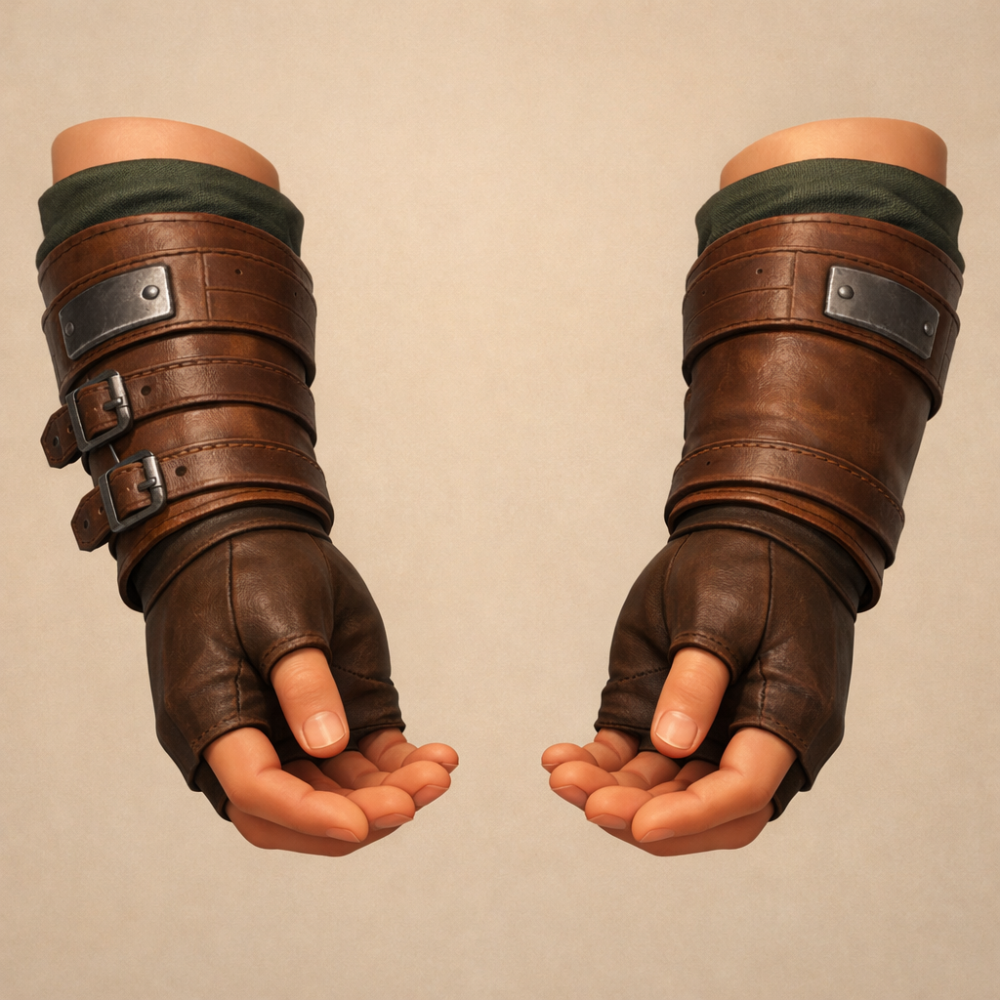

concept-01
Grounded Paired Baseline
Create one concept image for a first-person fantasy RPG hands-and-forearms aesthetic study. Show exactly one coherent paired left and right forearm-and-hands design on a plain background, in calm first-person-ready poses, focused on visual style exploration only and not rigging. The visual language should match a grounded, crafted, stylized, warm, readable castle-fantasy prototype. Materials should read as stylized skin, leather wraps, cloth accents, and simple forged metal details. Keep the anatomy readable, not photoreal, with clear wrist and forearm forms that could later inform a rigged asset. Avoid dramatic action poses, gore, hyper-real pores, option sheets, labeled callouts, or multiple variants in one image.